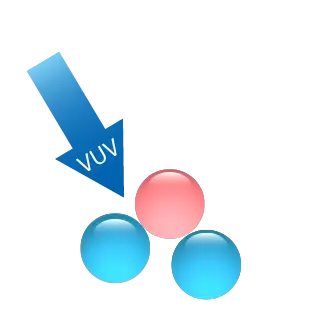
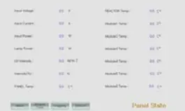
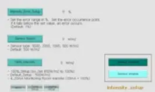
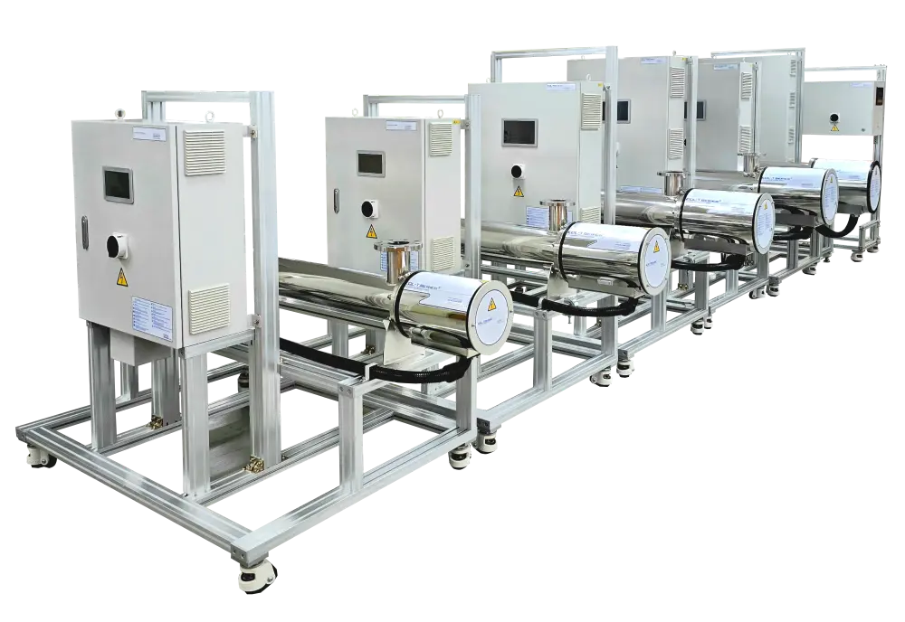

| 사양 | NCL-T350-E24 | NCL-T300-E20 | NCL-T250-E16 | NCL-T350-E24 | NCL-T350-E24 |
|---|
| 반응기 재질 | STS 316L |
| 반응기 길이 (mm) | 2038 | 2042 | 2038 | 2010 | 2010 |
| 반응기 높이 (mm) | 572 | 600 | 550 | 500 | 450 |
| 연결 규격 (mm/Inch) | 100A | 100A | 100A | 75A | 75A |
| 연결 방식 | ANSI, DIN, KS, JIS, 위생 배관 규격 중 선택 가능 |
| 설계 압력 | 10 bar |
| 내부 표면 마감 | 기계 연마 및 전해연마 (0.4 Ra) |
| 석영관 재질 | 합성 소재 |
| 램프 |
|---|
| 램프 수량 | 24 | 20 | 16 | 8 | 4 |
| 램프 형식 | Amalgam |
| 램프 출력 조절 범위 | 190W - 320W |
| 램프 접근 방식 | 단일 방향 유지관리 |
| 제어반 (표준형) |
|---|
| 폭 (mm) | 283.5 | 283.5 | 283.5 | 283.5 | 283.5 |
| 길이 (mm) | 810 | 810 | 810 | 810 | 810 |
| 높이 (mm) | 1160 | 1160 | 958 | 758 | 758 |
| 재질 및 보호 등급 | 탄소강 / IP54 |
| 색상 및 냉각 방식 | 선택 가능 / 팬 냉각 (여과 공기 유량 748 m³/h) |
| 제어 방식 | Microprocessor |
| 안정기 | 300 W급 모듈형 안정기 |
| 전원 전압 | [220 - 240Vac, 3PH, 50/60Hz 3W +PG] [220-240Vac, 1PH, 50/60Hz, 2W + PG] [380Vac, 3PH, 50Hz, 4W + PG] |
| 직렬 통신 | Modus TCP/IP |
| 디지털 입 · 출력 | 무전압 접점 입력 7점 / 출력 7점 |
| 아날로그 입 · 출력 | 4~20 mA 입력 2점 / 출력 2점 |
| 제어반 (모듈형) |
|---|
| 폭 (mm) | 283.5 | 없음 | 없음 | 없음 | 없음 |
| 길이 (mm) | 810 | 없음 | 없음 | 없음 | 없음 |
| 높이 (mm) | 1160 | 없음 | 없음 | 없음 | 없음 |
| 재질 및 보호 등급 | 탄소강 / IP54 |
| 색상 및 냉각 방식 | 선택 가능 / 팬 냉각 (여과 공기 유량 748 m³/h) |
| 제어 방식 | Microprocessor |
| 안정기 | 300 W급 모듈형 안정기 |
| 전원 전압 | [220-240Vac, 3PH, 50/60Hz 3W + PG] [220-240Vac, 1PH, 50/60Hz, 2W + PG] [380Vac, 3PH, 50Hz, 4W + PG] |
| 직렬 통신 | Modbus TCP / IP (선택) |
| 디지털 입 · 출력 | 무전압 접점 입력 7점 / 출력 7점 |
| 아날로그 입 · 출력 | 4~20 mA 입력 2점 / 출력 2점 |


개인정보 처리방침: Neotec UV는 기업 고객의 상담 및 전문 서비스 문의 처리를 위해 필요한 최소한의 개인정보만 수집합니다.
수집하는 개인정보 항목: 문의 유형, 이름, 휴대전화번호, 이메일 주소 및 문의 내용
개인정보 수집 및 이용 목적: 고객 문의 검토 및 답변, 엔지니어링 상담 지원, 지속적인 고객 커뮤니케이션을 위한 상담 이력 관리
개인정보 보유 및 이용 기간: 제출된 모든 개인정보는 접수일로부터 2년간 안전하게 보관되며, 보유 기간이 경과하면 영구적으로 파기됩니다.
Cookie Policy: Neotec UV는 쿠키 데이터를 수집, 저장 또는 추적하지 않습니다. 당사 웹사이트는 정적인 정보 제공을 목적으로 설계되었으며, 사용자 추적이나 세션 정보를 저장하지 않는 독립적인 브라우징 환경을 제공합니다.